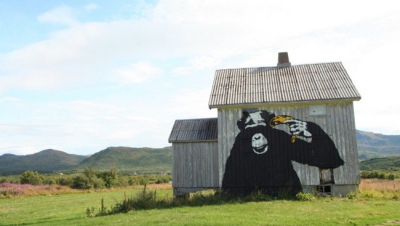

Hip hop-kulturen, som graffiti er en del av, oppstod i New York på 1960- og 70-tallet, men spredte seg internasjonalt ved inngangen til 1980-tallet.
Det er vanlig å si at graffitien kom til Norge i 1984. Den amerikanske filmen Beat Street, som omhandler hip hop-miljøet i New York, ble satt opp på Colosseum kino med stor suksess dette året.
Samme år ble kunstboken Subway Art, som dokumenterer New York-graffitiens tidlige historie, utgitt i London.
Boken ble en internasjonal bestselger, og inspirerte unge graffitimalere over hele verden. Omtrent samtidig dukket de første «piecene» opp på vegger rundt om i Oslo.
I 1984 kom også de første avisoppslagene om graffiti. En av de første artiklene ble trykt i VG, og innledet med kunstneren Willi Storns vurdering av graffitien på Brynseng.
«Uhyre proft utført. Dette beriker miljøet», sa han. Resten av artikkelen handlet om at Oslo Sporveier var i gang med å skape et «konstruktivt samarbeid med graffiti-artistene» (VG, 9.10.1984).
